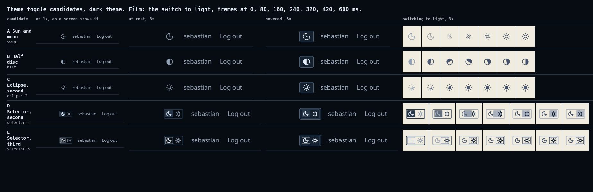
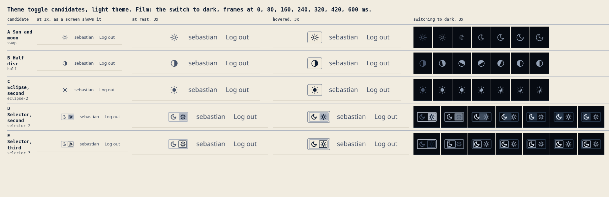
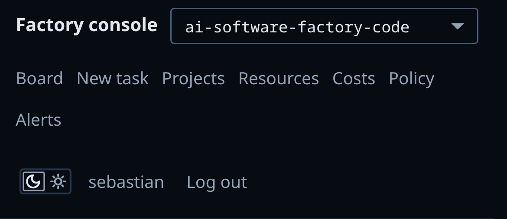
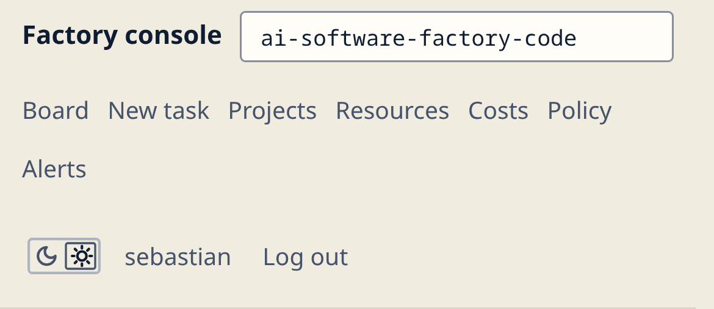
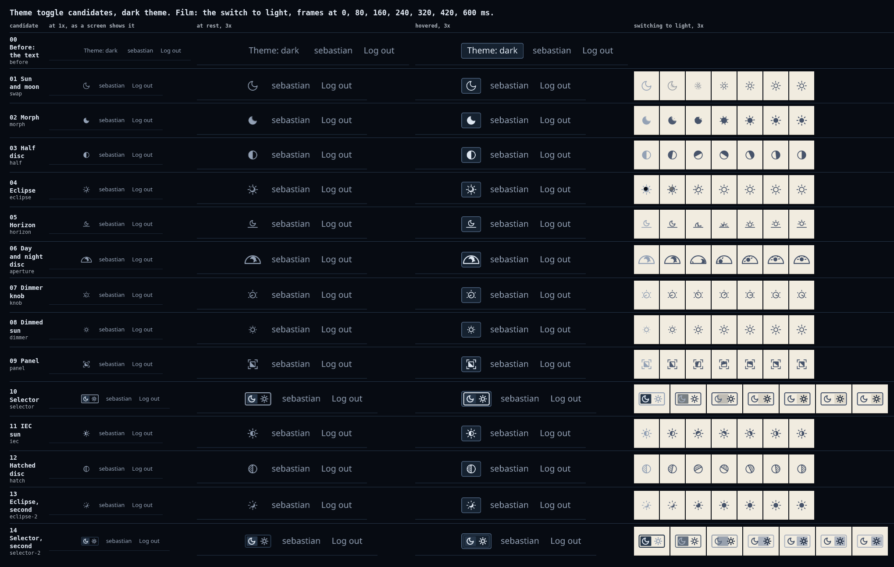
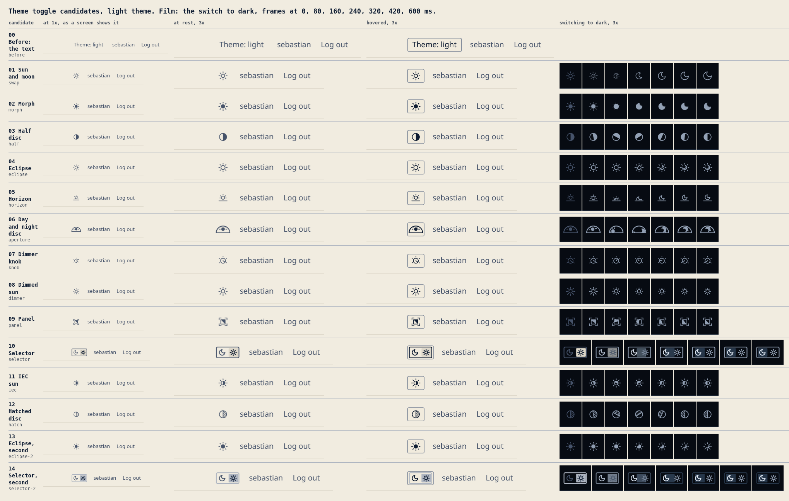
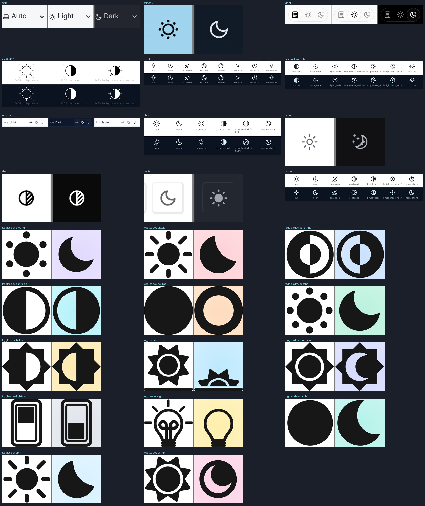

"Theme: dark" in the top bar looks boring, so this round looks for a symbol to replace it. It ran the portfolio's process at the size of one control. The brief sets the rules. 33 references from other products and standards gave ten patterns. Twelve candidates were built as SVG and shot in the real console's top bar (the lab, busy scenario) at 1x and 3x, at rest, hovered and as a film of the switch. Two critics judged them over four loops. The notes hold the run, the scores and what the director overruled.
Sebastian picked E, selector-3: C15, shipped in the code repository as 418cc0d. The shipped top bar, dark, light, the phone.
The recommendation: E, selector-3. Moon and sun side by side in a thin frame. A 1 px outline marks the theme in force and slides across in 280 ms. In the console it becomes two buttons, so a click on the sun sets the light theme and a click on the moon the dark theme. Both critics picked it in the compare loop (9 of 10 each). It is the only finalist that shows the theme in force and the other one at once, and it reads as an instrument's mode switch. It is 46 px wide, against 30 px for a single glyph. The runner-up depends on the critic: B, the half disc (Gemini), or C, eclipse-2 (GLM).
A is the common web icon, kept as the baseline. D is the critics' pick as it was judged. E is D with its key fixed. D's filled key measured 1.6:1 on the page, under the console's 3:1 for a fill that carries a state. E's outline measures 7.5:1 (dark) and 6.6:1 (light).




Each bar carries the console's tokens. A click on a symbol switches that bar's theme and runs its motion. The button switches every bar at once.


The research agent took a crop of each live toggle it could reach. The icon sets and the IEC symbols were rendered in both themes. The table lists the motion of each one and the patterns.

This table shows the scores out of 10 in the compare loop. Both critics picked selector-2, and the key check then preferred selector-3 to it (Gemini 9 against 2 on state, GLM 8 against 3). The notes hold the two loops over all candidates and the claims the director checked against the pixels.
| finalist | Gemini | GLM |
|---|---|---|
| D selector-2 | 9 | 9 |
| C eclipse-2 | 5 | 8 |
| B half | 7 | 4 |
| A swap | 6 | 6 |
Eight critic calls at $0.03, $0.24 of the $3 cap. No images were generated: the round is about one 18 px glyph, which an image model cannot draw exactly.